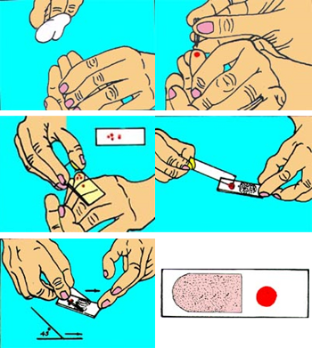
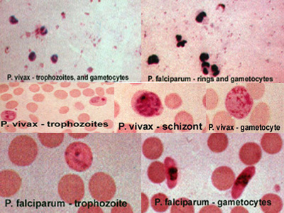

Diagnosis of malaria involves identification of malaria parasite or its antigens/products in the blood of the patient. Although this seems simple, the efficacy of the diagnosis is subject to many factors. The different forms of the four malaria species; the different stages of erythrocytic schizogony; the endemicity of different species; the population movements; the inter-relation between the levels of transmission, immunity, parasitemia, and the symptoms; the problems of recurrent malaria, drug resistance, persisting viable or non-viable parasitemia, and sequestration of the parasites in the deeper tissues; and the use of chemoprophylaxis or even presumptive treatment on the basis of clinical diagnosis can all have a bearing on the identification and interpretation of malaria parasitemia on a diagnostic test.
The diagnosis of malaria is confirmed by blood tests and can be divided into microscopic and non-microscopic tests.
Microscopic Tests
The microscopic tests involve staining and direct visualization of the parasite under the microscope. For more than hundred years, the direct microscopic visualization of the parasite on the thick and/or thin blood smears has been the accepted method for the diagnosis of malaria in most settings, from the clinical laboratory to the field surveys. The careful examination of a well-prepared and well-stained blood film currently remains the “gold standard” for malaria diagnosis. The most commonly used microscopic tests include the peripheral smear study and the Quantitative Buffy Coat (QBC) test.
The simplest and surest test is the time-honoured peripheral smear study for malarial parasites. None of the other newer tests have surpassed the ‘gold standard’ peripheral smear study.
Remember this:
- Ask for MP test in all cases of fever and related symptoms and also whenever there is high level of suspicion
- MP test can be done at any time. Do not wait for typical symptoms and signs or for chills
- A negative test DOES NOT rule out malaria. Repeated tests may have to be done in all doubtful cases. Duration of the illness, level of parasitemia, expertise of the technician and the method of examination may all have a bearing on the result of the M.P. test
Peripheral smear study for malarial parasites – The MP test
Light microscopy of thick and thin stained blood smears remains the standard method for diagnosing malaria. It involves collection of a blood smear, its staining with Romanowsky stains and examination of the Red Blood Cells for intracellular malarial parasites. Thick smears are 20–40 times more sensitive than thin smears for screening of Plasmodium parasites, with a detection limit of 10–50 trophozoites/μl. Thin smears allow one to identify malaria species (including the diagnosis of mixed infections), quantify parasitemia, and assess for the presence of schizonts, gametocytes, and malarial pigment in neutrophils and monocytes.
The peripheral blood smear provides comprehensive information on the species, the stages, and the density of parasitemia. The efficiency of the test depends on the quality of the equipment and reagents, the type and quality of the smear, skill of the technician, the parasite density, and the time spent on reading the smear. The test takes about 20 to 60 minutes depending on the proximity of the laboratory and other factors mentioned above. It is estimated to cost about 12 to 40 US cents per slide in the endemic countries.
Before reporting a negative result, at least 200 oil immersion visual fields at a magnification of 1000× should be examined on both thick and thin smears, which has a sensitivity of 90%. The level of parasitemia may be expressed either as a percentage of parasitized erythrocytes or as the number of parasites per microliter of blood. In nonfalciparum malaria, parasitemia rarely exceeds 2%, whereas it can be considerably higher (>50%) in falciparum malaria. In nonimmune individuals, hyperparasitemia (>5% parasitemia or >250 000 parasites/μl) is generally associated with severe disease.
The smear can be prepared from blood collected by venipuncture, finger prick and ear lobe stab. In obstetric practice, cord blood and placental impression smears can be used. In fatal cases, post-mortem smears of cerebral grey matter obtained by needle necropsy through the foramen magnum, superior orbital fissure, ethmoid sinus via the nose or through fontanelle in young children can be used.
Preparation of the smear: Use universal precautions while preparing the smears for malarial parasites – use gloves; use only disposable needles/lancets; wash hands; handle and dispose the sharp instruments and other materials contaminated with blood carefully to avoid injury.
- Hold the third finger of the left hand and wipe its tip with spirit/Savlon swab; allow to dry
- Prick the finger with disposable needle/lancet; allow the blood to ooze out
- Take a clean glass slide. Take 3 drops of blood 1 cm from the edge of the slide, take another drop of blood one cm from the first drop of blood
- Take another clean slide with smooth edges and use it as a spreader and make thick and thin smears. Allow it to dry
- Slide number can be marked on the thin smear with a lead pencil
{kind=link}
Thick smear: The thick smear of correct thickness is the one through which newsprint is barely visible. It is dried for 30 minutes and not fixed with methanol. This allows the red blood cells to be hemolyzed and leukocytes and any malaria parasites present will be the only detectable elements. However, due to the hemolysis and slow drying, the plasmodia morphology can get distorted, making differentiation of species difficult. Thick smears are therefore used to detect infection, and to estimate parasite concentration.
Thin smear: Air dry the thin smear for 10 minutes. After drying, the thin smear should be fixed in methanol. This can be done by either dipping the thin smear into methanol for 5 seconds or by dabbing the thin smear with a methanol-soaked cotton ball. While fixing the thin smear, all care should be taken to avoid exposure of the thick smear to methanol.
Staining: A number of Romanowsky stains like Field’s, Giemsa’s, Wright’s and Leishman’s are suitable for staining the smears. Thick films are ideally stained by the rapid Field’s technique or Giemsa’s stain for screening of parasites. The sensitivity of a thick blood film is 5-10 parasites/µl. Thin blood films stained by Giemsa’s or Leishman’s stain are useful for specification of parasites and for the stippling of infected red cells and have a sensitivity of 200 parasites/µl. The optimal pH of the stain is 7.2.
Slides should be clean and dry. It is better to use neutral distilled water.
Thick films: The thick film is first de-hemoglobinised in water and then stained with Giemsa.
Rapid Giemsa: Prepare a 10% Giemsa in buffered water at pH 7.1. Immerse the slide in the stain for 5 minutes. Rinse gently for 1 or 2 seconds in a jar of tap water. Drain, dry and examine.
Standard Giemsa: Prepare a 4% Giemsa in buffered solution at pH 7.1. Immerse the slide (at least 12 hours old) in stain for 30 minutes. Rinse with fresh water, drain, dry and examine.
Thin films: Thin film examination is the gold standard in diagnosis of malarial infection.
Giemsa stain: Fix with 1-2 drops of methanol. Cover the film with 10% Giemsa stain and leave for 30 minutes, wash with distilled water, drain, dry and examine.
Leishman’s stain: Add 7-8 drops of the stain and leave for 1-2 minutes. Then add 12-15 drops of buffered distilled water, mix thoroughly, leave for 4 – 8 minutes. Then wash off with clean water, drain, dry and examine.
Jaswant Singh Battacharya (JSB) Stain for thick and thin films: This is the standard method used by the laboratories under the National Malaria Eradication Programme in India.
{kind=link}
Preparation of the stain:
JSB I stain: Medicinal methylene blue (0.5 g) is dissolved in 500 ml of distilled water and 3 ml of 1% sulphuric acid (H2SO4) is gradually added, followed by 0.5 g of potassium dichromate (K2Cr2O7) when a purple precipitate forms. 3.5 g of disodium hydrogen phosphate dihydrate (Na2HPO4.2H2O) is next added and when the precipitate has dissolved, the solution is boiled in a flask with a reflex condenser for 1 hour. The stain is ready for immediate use.
JSB II stain: 1 g Eosin is dissolved in 500 ml tap water.
Buffered water: 0.22 g of disodium hydrogen phosphate dihydrate (Na2HPO4.2H2O) and 0.74 g of potassium acid phosphate (KH2PO4) are added to 1000 ml of distilled water or filtered tap water.
Staining:
After dehemoglobinisation, dip the thick smear in JSB II stain two to three times. Wash it by dipping in buffer water two to three times. Then keep the thick film dipped in JSB I stain for 40-60 seconds. Wash it with buffer water. Drain, dry and examine.
Differentiation of Malaria Parasites
{kind=link}
| Finding | P. falciparum | P. vivax | P. malariae | P. ovale |
| RBC Size | Not enlarged | Enlarged | Not enlarged | Enlarged |
| RBC Shape | Round, sometimes crenated | Round or oval, frequently bizarre | Round | Round or oval, often fimbriated |
| RBC Colour | Normal, but may become darker; may have a purple rim | Normal to pale | Normal | Normal |
| Stipling | Maurer’s spots, appear as large red spots, loops and clefts; up to 20 or fewer. | Schuffner’s dots, appear as small red dots, numerous. | Ziemann’s dots, few tiny dots, rarely detected | Schuffner’s dots (James’s dots). Numerous small red dots. |
| Pigment | Black or dark brown; in asexual forms as one or two masses; in gametocytes as about 12 rods | Seen as a haze of fine golden brown granules scattered through the cytoplasm | Black or brown coarse granules; scattered | Intermediate between P. vivax and P. malariae |
| Early trophozoite (ring) | Smallest, delicate; sometimes two chromatin dots; multiple rings commonly found | Relatively large; one chromatin dot, sometimes two; often two rings in one cell | Compact; one chromatin dot; single | Compact; one chromatin dot; single |
| Schizont | Medium size; compact; numerous chromatin masses; coarse pigments; rarely seen in peripheral blood | Large; amoeboid; numerous chromatin masses; fine pigments | Small; compact; few chromatin masses; coarse pigments | Medium size; compact; few chromatin masses; coarse pigments |
| Gametocyte | Crescent shaped, larger and slender; central chromatin | Spherical; compact | Similar to P. vivax, but smaller and less numerous | Like P. vivax, but smaller |
Problems: The exacting needs of the blood smear examination are often not met in certain remote and poor parts of the world. Detection of low levels of parasitemia, sequestered parasites of P. falciparum and past infections in aspiring blood donors; ascertaining viability of the detected parasites; difficulties in maintaining the required technical skills and resultant misdiagnosis due to poor familiarity and problems in accessing and activating the facility in emergencies are some of the deficiencies with the blood smear examination.
In falciparum malaria, parasitized erythrocytes may be sequestered in tissue capillaries resulting in a falsely low parasite count in the peripheral blood (‘visible’ parasitemia). In such instances, the developmental stages of the parasite seen on blood smear may help to assess disease severity better than parasite count alone. The presence of more mature parasite forms (>20% of parasites as late trophozoites and schizonts) and of more than 5% of neutrophils containing malarial pigment indicates more advanced disease and a worse prognosis. One negative blood smear makes the diagnosis of malaria very unlikely (especially the severe form); however, smears should be repeated every 6–12 hours for 48 hours if malaria is still suspected.
Sometimes no parasites can be found in peripheral blood smears from patients with malaria, even in severe infections. This may be explained by partial antimalarial treatment or by sequestration of parasitised cells in deep vascular beds. In these cases, parasites, or malarial pigment may be found in the bone marrow aspirates. Presence of malarial pigment in circulating neutrophils and monocytes may also suggest the possibility of malaria.
Alternative microscopic methods have been tried, including faster methods of preparation, dark-field microscopy, and stains like benzothiocarboxypurine, acridine orange and Rhodamine-123. Acridine orange has been tried as a direct staining technique, with concentration methods such as thick blood film or the centrifugal Quantitative Buffy Coat system and with excitation filter in the Kawamoto technique. Inability to easily differentiate the Plasmodium species, requirements of expensive equipment, supplies and special training as well as the high cost limit the use of these methods.
Thick Blood Film:
Infected erythrocytes are counted in relation to a predetermined number of WBCs and an average of 8000/µl is taken as standard. 200 leucocytes are counted in 100 fields (0.25 µl of blood). All parasite species and forms including both sexual and asexual forms are counted together.
If >10 parasites are counted, then the following formulae can be applied:
(No. of Parasites/ No. of WBCs counted) x 8000 = No. of parasites/µl
Or if 200 leukocytes are counted,
No. of parasites counted x 40 = No. of parasites/µl
If the parasites are <9, then 500 WBCs should be counted and the formula will be –
No. of parasites counted x 16 = No. of parasites/µl
In the Earle and Perez method, the number of asexual parasites per known volume of blood (usually 5µl) spread as a thick film are counted; this is used only in research studies.
Thin Blood Film:
Determining the percentage of parasitaemia will be essential for P. falciparum. The number of infected red cells (and not number of parasites) in 1000 RBCs is converted to percentage.
This method estimates the percentage of red blood cells infected with malarial parasites. The smear is scanned carefully, one ‘row’ at a time. The total number of red cells and the number of parasitised red cells are tabulated separately. If 1000 red cells are counted, then divide the number of parasitised red cells by 10 to get the percentage (i.e. if 30 out of 1000 cells are parasitised, then the parasitised red cell count is 3%). If lesser red cells are counted, then divide the number parasitized by the total number counted and multiply the result by 100 to obtain a percentage estimate of red blood cells parasitized. If occasional parasites are seen when scanning the smear, but none are identified during the process of counting 300-500 red blood cells, a percentage value of less than 1% of red blood cells parasitized is assigned. An estimate of less than 1% of red blood cells parasitized does not need to be refined, since no clinical predictive value is gained. It is values of 2-3% or above that are of clinical concern.
The “plus system” is less precise as variation in the thickness of the film results in false variation in parasite count.
+ = 1–10 per 100 thick fields.
++ = 11-100 per 100 thick fields.
+++ = 1–10 per thick field.
++++ = >10 per thick field.